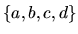
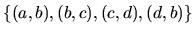
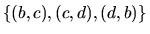
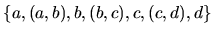

| The Forrest for the Trees |
A graph G is a set of point V(G), together with a set of edges E(G), where each element of E(G) is an unordered pair of distinct points of V(G).
Example 1: Let G be a graph where V(G) =

and
E(G) =
.
The figure gives a depiction of G.
Notice that G contains the ``cycle" , . A graph devoid of cycles is called a tree. A path in a graph G is an alternating sequence of points and edges, (beginning and ending with a point) such that all the points of the path are distinct. In the graph of example 1,  is a path.
Fact: Every two points of a tree are joined by a unique path.
A graph is called connected if every pair of points are joined by a path. The graph of
example 1 is connected. If a graph is not connected then it is made up of ``subgraphs"
which are. Each one of these subgraphs is called a connected component of the graph G.
A graph for which each connected component is a tree is called a forest, see figure below.
One extreme case worth mentioning is the case when one of the component trees has one point but no edges joined to it. This tree likes like an isolated dot. We will call this an acorn. We are ready to define the problem.
Problem: Given a forest you are to write a program that counts the number of trees and acorns.
The first line of the input file contains the number of test cases your program has to process. Each test case is a forest description consisting of two parts:
``There are x tree(s) and y acorn(s).", where x and y are the numbers of trees and acorns, respectively.
Example 2: Let G be a graph whose edges and points are given by the first test case in the sample input. A depiction of this graph is given in figure following.
Notes: A forest may have no trees and all acorns, all trees and no acorns, or anything
inbetween, so keep your eyes open and don't miss the forest for the trees!
2 (A,B) (B,C) (B,D) (D,E) (E,F) (B,G) (G,H) (G,I) (J,K) (K,L) (K,M) **** A,B,C,D,E,F,G,H,I,J,K,L,M,N (A,B) (A,C) (C,F) ** A,B,C,D,F
There are 2 tree(s) and 1 acorn(s). There are 1 tree(s) and 1 acorn(s).